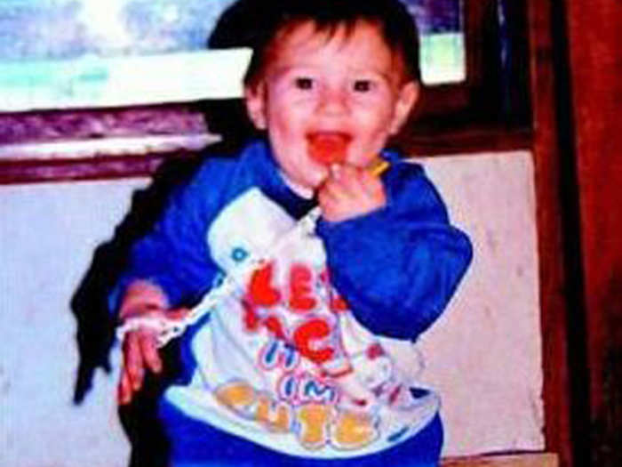
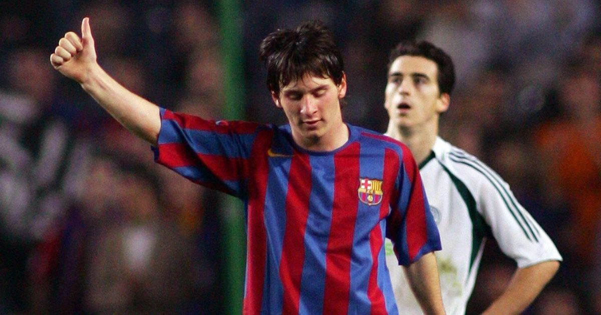
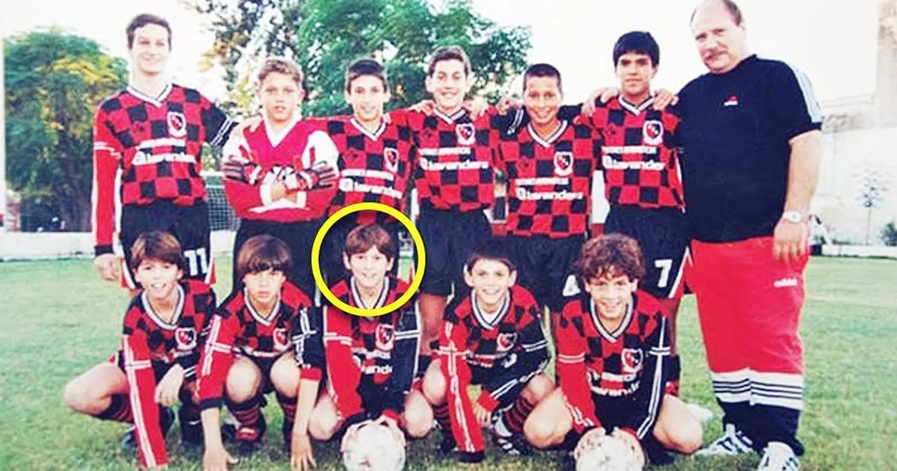
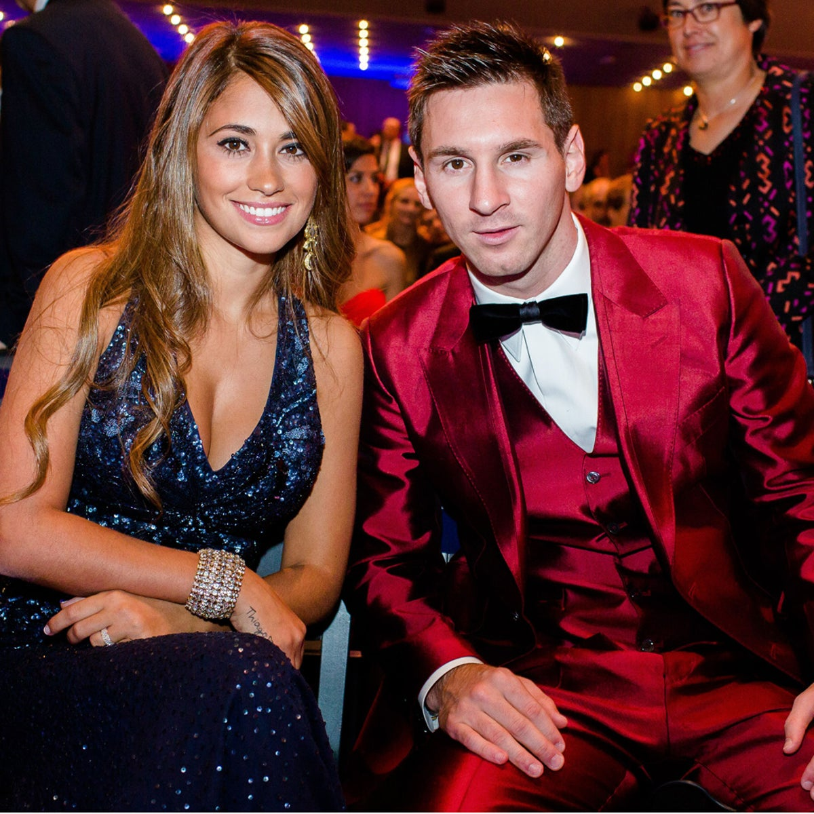

Narrative
Biography

Young Messi
Lionel Messi was born on June 24, 1987, in Rosario, Argentina. He began playing football at a young
age and quickly showed a natural talent for the game. At the age of 13, he moved to Barcelona to
join the youth academy of FC Barcelona.

Messi making debut for barca - 2004
Messi made his professional debut for Barcelona in 2004 and quickly became a regular in the first
team. He helped Barcelona win numerous trophies, including the Champions League, La Liga, and the
Copa del Rey.
 Messi's first international debut - 2005
Messi's first international debut - 2005
Messi made his international debut for Argentina in 2005 and quickly became a regular in the team.
He helped Argentina win the Copa América in 2021 and the FIFA World Cup in 2022.
Early life and career

Messi at Newell's Old Boys youth academy
In 1995, Messi joined the Newell's Old Boys youth academy. He quickly became one of the most
promising young players in Argentina and helped the team win several youth championships. In 2000,
Messi was diagnosed with a growth hormone deficiency. The treatment for this condition was expensive
and Newell's Old Boys could not afford to pay for it.

In 2001, Messi's family moved to Barcelona so that he could join the youth academy of FC Barcelona.
Messi quickly became one of the most promising young players in the Barcelona academy and helped the
team win several youth championships.


Messi made his international debut for Argentina in 2005 and quickly became a regular in the team. He helped Argentina win the Copa América in 2021 and the FIFA World Cup in 2022.
Messi is considered one of the greatest footballers of all time and has won numerous individual awards, including the Ballon d'Or seven times.
Personal life

Lionel Messi with his wife Antonella Roccuzzo
Messi is married to Antonela Roccuzzo and they have three children together. Messi is a devout Catholic and is involved in several charitable organizations.